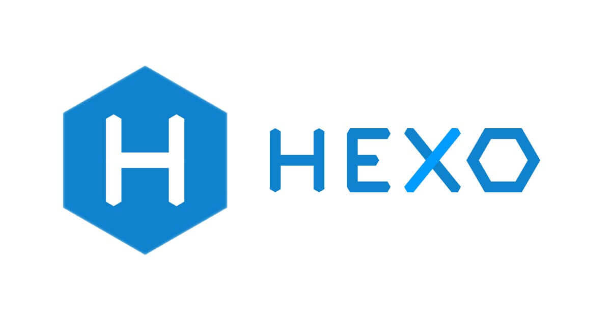
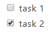

<!DOCTYPE html><html><head><meta name="generator" content="Hexo 3.8.0"><meta charset="utf-8"><title>將 Hexo 的 Markdown 渲染引擎換成 markdown-it | Titangene Blog</title><meta name="description" content="利用 blog 紀錄學習歷程"><meta http-equiv="X-UA-Compatible" content="IE=edge"><meta name="viewport" content="width=device-width,initial-scale=1,maximum-scale=1"><meta name="HandheldFriendly" content="True"><meta name="apple-mobile-web-app-capable" content="yes"><meta name="author" content="Titangene"><link rel="shortcut icon" href="/favicon.ico"><link rel="alternate" href="/atom.xml" title="Titangene Blog"><meta name="description" content="個人很常用 HackMD 紀錄筆記，希望 blog 也可以支援 HackMD 的 Markdown 格式，因此本篇的目標就是要將 Hexo 原本的 Markdown 渲染引擎 marked，換成 HackMD 的 Markdown 渲染引擎：markdown-it。"><meta name="keywords" content="Hexo,Markdown"><meta property="og:type" content="article"><meta property="og:title" content="將 Hexo 的 Markdown 渲染引擎換成 markdown-it"><meta property="og:url" content="https://titangene.github.io/article/hexo-markdown-it.html"><meta property="og:site_name" content="Titangene Blog"><meta property="og:description" content="個人很常用 HackMD 紀錄筆記，希望 blog 也可以支援 HackMD 的 Markdown 格式，因此本篇的目標就是要將 Hexo 原本的 Markdown 渲染引擎 marked，換成 HackMD 的 Markdown 渲染引擎：markdown-it。"><meta property="og:locale" content="zh-tw"><meta property="og:image" content="https://titangene.github.io/images/cover/hexo.jpg"><meta property="og:updated_time" content="2019-09-08T16:34:17.393Z"><meta name="twitter:card" content="summary_large_image"><meta name="twitter:title" content="將 Hexo 的 Markdown 渲染引擎換成 markdown-it"><meta name="twitter:description" content="個人很常用 HackMD 紀錄筆記，希望 blog 也可以支援 HackMD 的 Markdown 格式，因此本篇的目標就是要將 Hexo 原本的 Markdown 渲染引擎 marked，換成 HackMD 的 Markdown 渲染引擎：markdown-it。"><meta name="twitter:image" content="https://titangene.github.io/images/cover/hexo.jpg"><meta name="twitter:creator" content="@titangeneTW"><meta name="twitter:site" content="@titangene_blog"><meta property="fb:admins" content="100001106016019"><meta property="fb:app_id" content="2470546159839111"><meta property="og:image:width" content="1200"><meta property="og:image:height" content="630"><meta name="google-site-verification" content="AaJ39L7h-nWwJjXJMhAMtXSF6H6BUgGWXC80kYvLic8"><link rel="stylesheet" href="//fonts.googleapis.com/css?family=Inconsolata|Titillium+Web"><link rel="stylesheet" href="//cdn.jsdelivr.net/gh/tonsky/FiraCode@1.207/distr/fira_code.css"><link rel="stylesheet" href="//use.fontawesome.com/releases/v5.7.0/css/all.css" integrity="sha384-lZN37f5QGtY3VHgisS14W3ExzMWZxybE1SJSEsQp9S+oqd12jhcu+A56Ebc1zFSJ" crossorigin="anonymous"><link rel="stylesheet" href="/style.css"><script async src="https://www.googletagmanager.com/gtag/js?id=UA-129758206-1"></script><script>!function(a){function n(){dataLayer.push(arguments)}a.dataLayer=a.dataLayer||[],n("js",new Date),n("config","UA-129758206-1")}(window)</script><script>function setLoadingBarProgress(e){document.getElementById("loading-bar").style.width=e+"%"}</script></head></html><body><div id="loading-bar-wrapper"><div id="loading-bar"></div></div><script>setLoadingBarProgress(20)</script><header class="l_header"><div class="wrapper"><div class="nav-main container container--flex"><a class="logo flat-box" href="/">Titangene Blog</a><div class="menu"><ul class="h-list"><li><a class="flat-box nav-home" href="/">Home</a></li><li><a class="flat-box nav-archives" href="/archives">Archives</a></li></ul><div class="underline"></div></div><div class="m_search"><form name="searchform" class="form u-search-form"><input type="text" class="input u-search-input" placeholder="Search"> <i class="fas fa-search"></i></form></div><ul class="switcher h-list"><li class="s-search"><a class="fas fa-search" href="javascript:void(0)"></a></li><li class="s-menu"><a class="fas fa-bars" href="javascript:void(0)"></a></li></ul></div><div class="nav-sub container container--flex"><a class="logo flat-box" href="/">Titangene Blog</a><ul class="switcher h-list"><li class="s-comment"><a class="far fa-comment-alt" href="javascript:void(0)"></a></li><li class="s-top"><a class="fas fa-arrow-up" href="javascript:void(0)"></a></li><li class="s-toc"><a class="fas fa-list-ol" href="javascript:void(0)"></a></li></ul></div></div></header><aside class="menu-phone"><nav><a href="/" class="nav-home nav">Home </a><a href="/archives" class="nav-archives nav">Archives</a></nav></aside><script>setLoadingBarProgress(40)</script><div class="l_body"><div class="container clearfix"><div class="l_main"><article id="post-hexo-markdown-it" class="post white-box article-type-post" itemscope itemprop="blogPost"><section class="meta"><h2 class="title"><a href="/article/hexo-markdown-it.html">將 Hexo 的 Markdown 渲染引擎換成 markdown-it</a></h2><span class="post-time"><span class="post-meta-item-icon"><i class="fa fa-calendar"></i> </span><span class="post-meta-item-text">發表於</span> <time title="建立時間：2019-01-29 22:51:00" itemprop="dateCreated datePublished" datetime="2019-01-29T22:51:00+08:00">2019-01-29 </time><span class="post-meta-divider">|</span> <span class="post-meta-item-icon"><i class="fa fa-calendar-check"></i> </span><span class="post-meta-item-text">更新於</span> <time title="修改時間：2019-09-09 00:34:17" itemprop="dateModified" datetime="2019-09-09T00:34:17+08:00">2019-09-09</time></span> <span class="comments-count"><span class="post-meta-divider">|</span> <span class="post-meta-item-icon"><i class="fas fa-comment"></i> </span><a href="https://titangene.github.io/article/hexo-markdown-it.html#disqus_thread" class="article-comment-count" data-disqus-identifier="article/hexo-markdown-it.html" itemprop="discussionUrl"></a></span><div class="post-category"><span class="post-meta-item-icon"><i class="fa fa-folder"></i> </span><span class="post-meta-item-text">分類於</span> <span itemprop="about" itemscope itemtype="http://schema.org/Thing"><a href="/categories/blog/" itemprop="url" rel="index"><span itemprop="name">Blog</span></a></span></div></section><section class="toc-wrapper"><ol class="toc"><li class="toc-item toc-level-2"><a class="toc-link" href="#更換渲染引擎"><span class="toc-text">更換渲染引擎</span></a></li><li class="toc-item toc-level-2"><a class="toc-link" href="#安裝渲染引擎外掛套件"><span class="toc-text">安裝渲染引擎外掛套件</span></a><ol class="toc-child"><li class="toc-item toc-level-3"><a class="toc-link" href="#markdown-it-mathjax"><span class="toc-text">markdown-it-mathjax</span></a></li><li class="toc-item toc-level-3"><a class="toc-link" href="#markdown-it-task-checkbox"><span class="toc-text">markdown-it-task-checkbox</span></a></li></ol></li><li class="toc-item toc-level-2"><a class="toc-link" href="#設定-config-yml"><span class="toc-text">設定 _config.yml</span></a></li></ol></section><section class="article typo"><div class="article-entry" itemprop="articleBody"><p></p><p>個人很常用 HackMD 紀錄筆記，希望 blog 也可以支援 HackMD 的 Markdown 格式，因此本篇的目標就是要將 Hexo 原本的 Markdown 渲染引擎 <code>marked</code>，換成 HackMD 的 Markdown 渲染引擎：<code>markdown-it</code>。</p><a id="more"></a><h2 id="更換渲染引擎"><a class="header-anchor" href="#更換渲染引擎"></a>更換渲染引擎</h2><p>Hexo 預設的 markdown 渲染引擎是 <a href="https://github.com/markedjs/marked" target="_blank" rel="noopener"><code>marked</code></a>，並使用 <a href="https://github.com/hexojs/hexo-renderer-marked" target="_blank" rel="noopener"><code>hexo-renderer-marked</code></a> 此 Hexo 外掛來將 Markdown 轉換成靜態檔案 HTML，但因前面提到的需求，所以要刪除原本的渲染引擎</p><figure class="highlight shell"><table><tr><td class="gutter"><pre><span class="line">1</span><br></pre></td><td class="code"><pre><code class="hljs shell"><span class="hljs-meta">$</span> npm uninstall hexo-renderer-marked --save<br></code></pre></td></tr></table></figure><p>安裝我們要改用的 Markdown 渲染引擎：<code>markdown-it</code>，而使用此渲染引擎的 Hexo 外掛就是 <a href="https://github.com/hexojs/hexo-renderer-markdown-it" target="_blank" rel="noopener"><code>hexo-renderer-markdown-it</code></a>，所以要在 hexo 的專案中安裝此外掛：</p><figure class="highlight shell"><table><tr><td class="gutter"><pre><span class="line">1</span><br></pre></td><td class="code"><pre><code class="hljs shell"><span class="hljs-meta">$</span> npm install git+https://github.com/hexojs/hexo-renderer-markdown-it.git --save<br></code></pre></td></tr></table></figure><p>為何安裝 NPM 套件時要指定 github 的 repo 呢？因為 <code>hexo-renderer-markdown-it</code> 此 NPM 套件的程式沒有更新成 Github 上面的程式版本，請確定剛剛安裝套件中，<code>node_modules\hexo-renderer-markdown-it\lib\renderer.js</code> 這個檔案內的下面這段程式碼是否相同：</p><figure class="highlight javascript"><table><tr><td class="gutter"><pre><span class="line">1</span><br><span class="line">2</span><br><span class="line">3</span><br><span class="line">4</span><br><span class="line">5</span><br><span class="line">6</span><br><span class="line">7</span><br><span class="line">8</span><br><span class="line">9</span><br></pre></td><td class="code"><pre><code class="hljs javascript"><span class="hljs-keyword">if</span> (opt.plugins) &#123;<br>  parser = opt.plugins.reduce(<span class="hljs-function"><span class="hljs-keyword">function</span>(<span class="hljs-params">parser, pugs</span>) </span>&#123;<br>    <span class="hljs-keyword">if</span> (pugs <span class="hljs-keyword">instanceof</span> <span class="hljs-built_in">Object</span> &amp;&amp; pugs.name) &#123;<br>      <span class="hljs-keyword">return</span> parser.use(<span class="hljs-built_in">require</span>(pugs.name), pugs.options);<br>    &#125; <span class="hljs-keyword">else</span> &#123;<br>      <span class="hljs-keyword">return</span> parser.use(<span class="hljs-built_in">require</span>(pugs));<br>    &#125;<br>  &#125;, parser);<br>&#125;<br></code></pre></td></tr></table></figure><p>若是從 NPM 下載的套件版本 (也就是直接使用 <code>npm install hexo-renderer-markdown-it --save</code> 此指令)，會少幾句程式，少了可在載入 <code>markdown-it</code> 的外掛時為該外掛設定所需的 options：</p><figure class="highlight javascript"><table><tr><td class="gutter"><pre><span class="line">1</span><br><span class="line">2</span><br><span class="line">3</span><br><span class="line">4</span><br><span class="line">5</span><br></pre></td><td class="code"><pre><code class="hljs javascript"><span class="hljs-keyword">if</span> (opt.plugins) &#123;<br>  parser = opt.plugins.reduce(<span class="hljs-function"><span class="hljs-keyword">function</span>(<span class="hljs-params">parser, pugs</span>) </span>&#123;<br>    <span class="hljs-keyword">return</span> parser.use(<span class="hljs-built_in">require</span>(pugs));<br>  &#125;, parser);<br>&#125;<br></code></pre></td></tr></table></figure><h2 id="安裝渲染引擎外掛套件"><a class="header-anchor" href="#安裝渲染引擎外掛套件"></a>安裝渲染引擎外掛套件</h2><p>我們可以參考 <a href="https://github.com/hackmdio/codimd/blob/master/package.json" target="_blank" rel="noopener">HackMD</a> 的相依套件，只要是名為 <code>markdown-it-xxx</code> 的套件就是渲染引擎 <code>markdown-it</code> 的外掛：</p><figure class="highlight"><table><tr><td class="gutter"><pre><span class="line">1</span><br><span class="line">2</span><br><span class="line">3</span><br><span class="line">4</span><br><span class="line">5</span><br><span class="line">6</span><br><span class="line">7</span><br><span class="line">8</span><br><span class="line">9</span><br><span class="line">10</span><br><span class="line">11</span><br><span class="line">12</span><br><span class="line">13</span><br><span class="line">14</span><br><span class="line">15</span><br><span class="line">16</span><br><span class="line">17</span><br><span class="line">18</span><br><span class="line">19</span><br></pre></td><td class="code"><pre><code class="hljs json">&#123;<br>  "dependencies": &#123;<br>    // ...<br>    "markdown-it": "^8.2.2",<br>    "markdown-it-abbr": "^1.0.4",<br>    "markdown-it-container": "^2.0.0",<br>    "markdown-it-deflist": "^2.0.1",<br>    "markdown-it-emoji": "^1.3.0",<br>    "markdown-it-footnote": "^3.0.1",<br>    "markdown-it-imsize": "^2.0.1",<br>    "markdown-it-ins": "^2.0.0",<br>    "markdown-it-mark": "^2.0.0",<br>    "markdown-it-mathjax": "^2.0.0",<br>    "markdown-it-regexp": "^0.4.0",<br>    "markdown-it-sub": "^1.0.0",<br>    "markdown-it-sup": "^1.0.0"<br>    // ...<br>  &#125;<br>&#125;<br></code></pre></td></tr></table></figure><p>而下列是我選擇要安裝的外掛：</p><ul><li><a href="https://github.com/markdown-it/markdown-it-abbr" target="_blank" rel="noopener">markdown-it-abbr</a></li><li><a href="https://github.com/markdown-it/markdown-it-container" target="_blank" rel="noopener">markdown-it-container</a></li><li><a href="https://github.com/markdown-it/markdown-it-deflist" target="_blank" rel="noopener">markdown-it-deflist</a></li><li><a href="https://github.com/markdown-it/markdown-it-emoji" target="_blank" rel="noopener">markdown-it-emoji</a></li><li><a href="https://github.com/markdown-it/markdown-it-footnote" target="_blank" rel="noopener">markdown-it-footnote</a></li><li><a href="https://github.com/tatsy/markdown-it-imsize" target="_blank" rel="noopener">markdown-it-imsize</a></li><li><a href="https://github.com/markdown-it/markdown-it-ins" target="_blank" rel="noopener">markdown-it-ins</a></li><li><a href="https://github.com/markdown-it/markdown-it-mark" target="_blank" rel="noopener">markdown-it-mark</a></li><li><a href="https://github.com/rlidwka/markdown-it-regexp" target="_blank" rel="noopener">markdown-it-regexp</a></li><li><a href="https://github.com/markdown-it/markdown-it-sub" target="_blank" rel="noopener">markdown-it-sub</a></li><li><a href="https://github.com/markdown-it/markdown-it-sup" target="_blank" rel="noopener">markdown-it-sup</a></li><li><a href="https://github.com/linsir/markdown-it-task-checkbox" target="_blank" rel="noopener">markdown-it-task-checkbox</a></li></ul><figure class="highlight shell"><table><tr><td class="gutter"><pre><span class="line">1</span><br></pre></td><td class="code"><pre><code class="hljs shell"><span class="hljs-meta">$</span> npm i markdown-it-abbr markdown-it-checkbox markdown-it-container markdown-it-deflist markdown-it-emoji markdown-it-footnote markdown-it-imsize markdown-it-ins markdown-it-mark markdown-it-regexp markdown-it-sub markdown-it-sup --save<br></code></pre></td></tr></table></figure><h3 id="markdown-it-mathjax"><a class="header-anchor" href="#markdown-it-mathjax"></a>markdown-it-mathjax</h3><p>為何我未安裝 <code>markdown-it-mathjax</code> 這個外掛？這是因為…我之後再單獨寫一篇文章來介紹如何在 Markdown 加上數學式 MathJax。</p><h3 id="markdown-it-task-checkbox"><a class="header-anchor" href="#markdown-it-task-checkbox"></a>markdown-it-task-checkbox</h3><p>為何我會比 HackMD 多安裝 <code>markdown-it-task-checkbox</code> 這個外掛？</p><p>有使用過 HackMD 的朋友都知道，只要在 HackMD 輸入下列 Markdown 語法：</p><figure class="highlight markdown"><table><tr><td class="gutter"><pre><span class="line">1</span><br><span class="line">2</span><br></pre></td><td class="code"><pre><code class="hljs markdown"><span class="hljs-bullet">- </span>[ ] task 1<br><span class="hljs-bullet">- </span>[x] task 2<br></code></pre></td></tr></table></figure><p>就會被轉換成 HTML 的 checkbox：</p><figure class="highlight html"><table><tr><td class="gutter"><pre><span class="line">1</span><br><span class="line">2</span><br><span class="line">3</span><br><span class="line">4</span><br><span class="line">5</span><br><span class="line">6</span><br><span class="line">7</span><br><span class="line">8</span><br></pre></td><td class="code"><pre><code class="hljs html"><span class="hljs-tag">&lt;<span class="hljs-name">ul</span>&gt;</span><br>  <span class="hljs-tag">&lt;<span class="hljs-name">li</span> <span class="hljs-attr">class</span>=<span class="hljs-string">"task-list-item"</span>&gt;</span><br>    <span class="hljs-tag">&lt;<span class="hljs-name">input</span> <span class="hljs-attr">type</span>=<span class="hljs-string">"checkbox"</span> <span class="hljs-attr">class</span>=<span class="hljs-string">"task-list-item-checkbox "</span> /&gt;</span><span class="hljs-tag">&lt;<span class="hljs-name">label</span>&gt;</span><span class="hljs-tag">&lt;/<span class="hljs-name">label</span>&gt;</span>task 1<br>  <span class="hljs-tag">&lt;/<span class="hljs-name">li</span>&gt;</span><br>  <span class="hljs-tag">&lt;<span class="hljs-name">li</span> <span class="hljs-attr">class</span>=<span class="hljs-string">"task-list-item"</span>&gt;</span><br>    <span class="hljs-tag">&lt;<span class="hljs-name">input</span> <span class="hljs-attr">type</span>=<span class="hljs-string">"checkbox"</span> <span class="hljs-attr">class</span>=<span class="hljs-string">"task-list-item-checkbox"</span> <span class="hljs-attr">checked</span>=<span class="hljs-string">""</span> /&gt;</span><span class="hljs-tag">&lt;<span class="hljs-name">label</span>&gt;</span><span class="hljs-tag">&lt;/<span class="hljs-name">label</span>&gt;</span>task 2<br>  <span class="hljs-tag">&lt;/<span class="hljs-name">li</span>&gt;</span><br><span class="hljs-tag">&lt;/<span class="hljs-name">ul</span>&gt;</span><br></code></pre></td></tr></table></figure><p>畫面會看到一個未被勾選以及一個已被勾選的 checkbox：</p><p></p><p>不過 HackMD 不是靠著 Markdown 渲染引擎 <code>markdown-it</code> 的外掛來轉換成 HTML 的，而是直接利用正規表示法 (Regular Expression) 找到 <code>[ ]</code> 或 <code>[x]</code> 的文字，再將這些文字直接轉換成 HTML 的 checkbox。我擷取了 HackMD 的這段程式邏輯，若想看詳細的原始碼可至 HackMD 的原始碼內的 <a href="https://github.com/hackmdio/codimd/blob/master/public/js/extra.js#L263" target="_blank" rel="noopener"><code>public/js/extra.js</code> 檔案中的第 263 行左右</a>：</p><figure class="highlight javascript"><table><tr><td class="gutter"><pre><span class="line">1</span><br><span class="line">2</span><br><span class="line">3</span><br><span class="line">4</span><br><span class="line">5</span><br><span class="line">6</span><br><span class="line">7</span><br><span class="line">8</span><br><span class="line">9</span><br><span class="line">10</span><br><span class="line">11</span><br><span class="line">12</span><br><span class="line">13</span><br><span class="line">14</span><br><span class="line">15</span><br><span class="line">16</span><br></pre></td><td class="code"><pre><code class="hljs javascript"><span class="hljs-keyword">if</span> (<span class="hljs-regexp">/^\s*\[[x ]\]\s*/</span>.test(html)) &#123;<br>  li.innerHTML = html<br>    .replace(<br>      <span class="hljs-regexp">/^\s*\[ \]\s*/</span>,<br>      <span class="hljs-string">`&lt;input type="checkbox" class="task-list-item-checkbox" <span class="hljs-subst">$&#123;disabled&#125;</span>&gt;&lt;label&gt;&lt;/label&gt;`</span>,<br>    )<br>    .replace(<br>      <span class="hljs-regexp">/^\s*\[x\]\s*/</span>,<br>      <span class="hljs-string">`&lt;input type="checkbox" class="task-list-item-checkbox" checked <span class="hljs-subst">$&#123;disabled&#125;</span>&gt;&lt;label&gt;&lt;/label&gt;`</span>,<br>    );<br>  <span class="hljs-keyword">if</span> (li.tagName.toLowerCase() !== <span class="hljs-string">'li'</span>) &#123;<br>    li.parentElement.setAttribute(<span class="hljs-string">'class'</span>, <span class="hljs-string">'task-list-item'</span>);<br>  &#125; <span class="hljs-keyword">else</span> &#123;<br>    li.setAttribute(<span class="hljs-string">'class'</span>, <span class="hljs-string">'task-list-item'</span>);<br>  &#125;<br>&#125;<br></code></pre></td></tr></table></figure><h2 id="設定-config-yml"><a class="header-anchor" href="#設定-config-yml"></a>設定 _config.yml</h2><p>將下面這些設定在根目錄的 <code>_config.yml</code> 設定檔中：</p><figure class="highlight yaml"><table><tr><td class="gutter"><pre><span class="line">1</span><br><span class="line">2</span><br><span class="line">3</span><br><span class="line">4</span><br><span class="line">5</span><br><span class="line">6</span><br><span class="line">7</span><br><span class="line">8</span><br><span class="line">9</span><br><span class="line">10</span><br><span class="line">11</span><br><span class="line">12</span><br><span class="line">13</span><br><span class="line">14</span><br><span class="line">15</span><br><span class="line">16</span><br><span class="line">17</span><br><span class="line">18</span><br><span class="line">19</span><br><span class="line">20</span><br><span class="line">21</span><br><span class="line">22</span><br><span class="line">23</span><br><span class="line">24</span><br><span class="line">25</span><br><span class="line">26</span><br><span class="line">27</span><br><span class="line">28</span><br><span class="line">29</span><br><span class="line">30</span><br><span class="line">31</span><br><span class="line">32</span><br><span class="line">33</span><br><span class="line">34</span><br><span class="line">35</span><br><span class="line">36</span><br><span class="line">37</span><br><span class="line">38</span><br><span class="line">39</span><br></pre></td><td class="code"><pre><code class="hljs yaml"><span class="hljs-comment"># Markdown-it config</span><br><span class="hljs-comment"># Docs: https://github.com/hexojs/hexo-renderer-markdown-it/wiki</span><br><span class="hljs-attr">markdown:</span><br><span class="hljs-attr">  render:</span><br><span class="hljs-attr">    html:</span> <span class="hljs-literal">true</span><br><span class="hljs-attr">    xhtmlOut:</span> <span class="hljs-literal">false</span><br><span class="hljs-attr">    breaks:</span> <span class="hljs-literal">true</span><br><span class="hljs-attr">    linkify:</span> <span class="hljs-literal">true</span><br><span class="hljs-attr">    typographer:</span> <span class="hljs-literal">true</span><br><span class="hljs-attr">    quotes:</span> <span class="hljs-string">'“”‘’'</span><br><span class="hljs-attr">  plugins:</span><br><span class="hljs-bullet">    -</span> <span class="hljs-string">markdown-it-abbr</span><br><span class="hljs-bullet">    -</span> <span class="hljs-string">markdown-it-footnote</span><br><span class="hljs-bullet">    -</span> <span class="hljs-string">markdown-it-ins</span><br><span class="hljs-bullet">    -</span> <span class="hljs-string">markdown-it-sub</span><br><span class="hljs-bullet">    -</span> <span class="hljs-string">markdown-it-sup</span><br><span class="hljs-bullet">    -</span> <span class="hljs-string">markdown-it-deflist</span><br><span class="hljs-bullet">    -</span> <span class="hljs-string">markdown-it-imsize</span><br><span class="hljs-bullet">    -</span> <span class="hljs-string">markdown-it-mark</span><br><span class="hljs-bullet">    -</span> <span class="hljs-string">markdown-it-regexp</span><br><span class="hljs-bullet">    -</span> <span class="hljs-string">markdown-it-task-checkbox</span><br><span class="hljs-attr">    - name:</span> <span class="hljs-string">markdown-it-container</span><br><span class="hljs-attr">      options:</span> <span class="hljs-string">success</span><br><span class="hljs-attr">    - name:</span> <span class="hljs-string">markdown-it-container</span><br><span class="hljs-attr">      options:</span> <span class="hljs-string">info</span><br><span class="hljs-attr">    - name:</span> <span class="hljs-string">markdown-it-container</span><br><span class="hljs-attr">      options:</span> <span class="hljs-string">warning</span><br><span class="hljs-attr">    - name:</span> <span class="hljs-string">markdown-it-container</span><br><span class="hljs-attr">      options:</span> <span class="hljs-string">danger</span><br><span class="hljs-bullet">    -</span> <span class="hljs-string">markdown-it-deflist</span><br><span class="hljs-attr">    - name:</span> <span class="hljs-string">markdown-it-emoji</span><br><span class="hljs-attr">      options:</span><br><span class="hljs-attr">        shortcuts:</span> <span class="hljs-string">&#123;&#125;</span><br><span class="hljs-attr">  anchors:</span><br><span class="hljs-attr">    level:</span> <span class="hljs-number">1</span><br><span class="hljs-attr">    collisionSuffix:</span> <span class="hljs-string">'v'</span><br><span class="hljs-attr">    permalink:</span> <span class="hljs-literal">true</span><br><span class="hljs-attr">    permalinkClass:</span> <span class="hljs-string">header-anchor</span><br><span class="hljs-attr">    permalinkSymbol:</span> <span class="hljs-string">''</span><br></code></pre></td></tr></table></figure><blockquote><p>想了解設定詳情可參考 <a href="https://github.com/hexojs/hexo-renderer-markdown-it/wiki/Advanced-Configuration" target="_blank" rel="noopener">Advanced Configuration | hexojs/hexo-renderer-markdown-it Wiki</a> 官方文件。</p></blockquote></div><div class="article-tags tags"><a href="/tags/hexo/" title="Hexo">Hexo</a> <a href="/tags/markdown/" title="Markdown">Markdown</a></div></section><div class="article-share-links"><span>分享：</span> <a class="fab fa-facebook-f" title="Facebook" target="_blank" href="javascript:window.open('https://www.facebook.com/sharer.php?u=https%3A%2F%2Ftitangene.github.io%2Farticle%2Fhexo-markdown-it.html', 'Share on Facebook','width=600, height=600')"></a> <a class="fab fa-twitter" title="Twitter" target="_blank" href="javascript:window.open('https://twitter.com/share?url=https%3A%2F%2Ftitangene.github.io%2Farticle%2Fhexo-markdown-it.html&amp;text=將 Hexo 的 Markdown 渲染引擎換成 markdown-it&amp;hashtags=Hexo,Markdown&amp;via=titangene_blog', 'Share on Twitter','width=600, height=260')"></a> <a class="fab fa-linkedin-in" title="Linkedin" target="_blank" href="javascript:window.open('https://www.linkedin.com/shareArticle?mini=true&amp;url=https%3A%2F%2Ftitangene.github.io%2Farticle%2Fhexo-markdown-it.html&amp;title=將 Hexo 的 Markdown 渲染引擎換成 markdown-it', 'Share on Linkedin','width=600, height=600')"></a> <a class="fab fa-facebook-messenger" title="Facebook Messenger" target="_blank" href="javascript:window.open('http://www.facebook.com/dialog/send?app_id=2470546159839111&amp;link=https%3A%2F%2Ftitangene.github.io%2Farticle%2Fhexo-markdown-it.html&amp;display=popup&amp;redirect_uri=https%3A%2F%2Fwww.facebook.com%2Fdialog%2Freturn%2Fclose%23_%3D_', 'Send in Messenger','width=600, height=600')"></a> <a class="fab fa-telegram-plane" href="https://telegram.me/share/url?url=https%3A%2F%2Ftitangene.github.io%2Farticle%2Fhexo-markdown-it.html&text=將 Hexo 的 Markdown 渲染引擎換成 markdown-it" target="_blank"></a></div><nav id="article-nav"><a href="/article/docker-mssql-server-for-linux.html" id="article-nav-prev" class="article-nav-link-wrap" title="在 Docker 下建立並使用 MSSQL Server for Linux" rel="prev"><strong class="article-nav-caption">Prev</strong><p class="article-nav-title">在 Docker 下建立並使用 MSSQL Server for Linux</p><i class="fas fa-angle-left"></i> </a><a href="/article/flutter-loading-images.html" id="article-nav-next" class="article-nav-link-wrap" title="Flutter 載入圖片" rel="next"><strong class="article-nav-caption">Next</strong><p class="article-nav-title">Flutter 載入圖片</p><i class="fas fa-angle-right"></i></a></nav><section id="list_related_posts"><h2>相關文章</h2><ul class="related-posts"><li class="related-posts-item"><a class="related-posts-link" href="/article/hackmd-dark-theme.html">套用自訂 HackMD 暗主題</a><div class="related-posts-item-abstract">HackMD 是我常用的寫作平台，因官方沒有提供暗主題的瀏覽模式，所以我就刻了自訂的暗主題，也將自訂主題開源在 GitHub，歡迎大家發 PR 給我，並記得幫我按個 ⭐️ 星。應該有很多人在瀏覽器安裝 Dark read</div></li><li class="related-posts-item"><a class="related-posts-link" href="/article/hexo-disqus.html">Hexo 加入 Disqus 留言版 (包含留言數)</a><div class="related-posts-item-abstract">Blog 最重要的是可以增進技術的交流，而交流就可以透過留言版來達成。大部分的 Blog 在每篇文章下面都會有留言板，而最常見的就是 Disqus 留言板，因此本篇會說明如何將 Disqus 留言板和各文章的留言數加入</div></li><li class="related-posts-item"><a class="related-posts-link" href="/article/hexo-copy-code-snippet-to-clipboard.html">在 Hexo 主題內新增程式碼片段複製功能</a><div class="related-posts-item-abstract">為了提高 blog 的使用體驗，本文將說明如何在 Hexo 主題內，提供程式碼片段複製至剪貼簿的功能。12// copy to clipboardvar clipboard = document.querySelecto</div></li></ul></section><section class="comments" id="comments"><h2>討論區</h2><div id="disqus_thread"><noscript>Please enable JavaScript to view the <a href="https://disqus.com/?ref_noscript">comments powered by Disqus.</a></noscript></div></section></article><script>window.subData={title:"將 Hexo 的 Markdown 渲染引擎換成 markdown-it",tools:!0}</script></div><aside class="l_side"><section class="m_widget about"><div class="avatar-section"><style>.avatar-cover{background:url(/images/avatar_cover.jpg) 0 10%/cover no-repeat}</style><div class="avatar-cover"></div></div><div class="header">Titangene</div><div class="content"><div class="desc">利用 blog 紀錄學習歷程</div></div><div class="content"><meta itemprop="url" content="https://titangene.github.io"><div class="social-wrapper"><a itemprop="sameAs" href="https://github.com/titangene" class="social github" target="_blank" rel="external"><span class="fab fa-github-alt"></span> </a><a itemprop="sameAs" href="https://www.facebook.com/titangene.tw" class="social facebook" target="_blank" rel="external"><span class="fab fa-facebook-square"></span> </a><a itemprop="sameAs" href="https://www.instagram.com/titangene/" class="social instagram" target="_blank" rel="external"><span class="fab fa-instagram"></span> </a><a itemprop="sameAs" href="https://www.flickr.com/photos/titangene" class="social flickr" target="_blank" rel="external"><span class="fab fa-flickr"></span> </a><a itemprop="sameAs" href="/atom.xml" class="social rss" target="_blank" rel="external"><span class="fas fa-rss"></span></a></div></div></section><section class="m_widget facebook_page"><div class="fb-page" data-href="https://www.facebook.com/titangene.blog/" data-width="250" data-small-header="false" data-adapt-container-width="false" data-hide-cover="false" data-show-facepile="true"><blockquote cite="https://www.facebook.com/titangene.blog/" class="fb-xfbml-parse-ignore"><p><a href="https://www.facebook.com/titangene.blog/" class="social facebook" target="_blank"><span class="fab fa-facebook-square"></span></a></p><p><a href="https://www.facebook.com/titangene.blog/">Titangene Blog</a></p><p>Loading...</p></blockquote></div></section><section class="m_widget recent"><div class="header">Recents</div><div class="content"><ul class="entry"><li><a itemprop="url" class="flat-box" href="/article/css-introduction.html"><time>2019-09-16</time><div class="name">重新認識 CSS - CSS 簡介</div></a></li><li><a itemprop="url" class="flat-box" href="/article/hackmd-dark-theme.html"><time>2019-05-18</time><div class="name">套用自訂 HackMD 暗主題</div></a></li><li><a itemprop="url" class="flat-box" href="/article/networking-in-docker-compose.html"><time>2019-05-15</time><div class="name">透過 Docker Compose 設定 network</div></a></li><li><a itemprop="url" class="flat-box" href="/article/gcp-network-and-http-load-balancer.html"><time>2019-04-24</time><div class="name">在 GCP 建立 Network Load Balancer 和 HTTP Load Balancer</div></a></li><li><a itemprop="url" class="flat-box" href="/article/getting-started-with-google-k8s-engine.html"><time>2019-04-19</time><div class="name">Google Kubernetes Engine (GKE) 入門</div></a></li></ul></div></section></aside><script>setLoadingBarProgress(60)</script></div></div><footer id="footer" class="clearfix"><div class="social-wrapper"><a href="https://github.com/titangene" class="social github" target="_blank" rel="external"><span class="fab fa-github-alt"></span> </a><a href="https://www.facebook.com/titangene.tw" class="social facebook" target="_blank" rel="external"><span class="fab fa-facebook-square"></span> </a><a href="https://www.instagram.com/titangene/" class="social instagram" target="_blank" rel="external"><span class="fab fa-instagram"></span> </a><a href="https://www.flickr.com/photos/titangene" class="social flickr" target="_blank" rel="external"><span class="fab fa-flickr"></span> </a><a href="/atom.xml" class="social rss" target="_blank" rel="external"><span class="fas fa-rss"></span></a></div><div>© 2018 - 2019 <span itemprop="copyrightHolder">Titangene</span></div><div>Powered by <a href="https://hexo.io/" class="codename" rel="external">Hexo</a> - Theme <a href="https://github.com/stkevintan/hexo-theme-material-flow" class="codename" rel="external">MaterialFlow</a></div><div><a rel="license" href="http://creativecommons.org/licenses/by-nc-sa/4.0/"></a></div></footer><script>setLoadingBarProgress(80)</script><script src="//cdnjs.cloudflare.com/ajax/libs/jquery/2.1.4/jquery.min.js"></script><script src="https://cdnjs.cloudflare.com/ajax/libs/moment.js/2.24.0/moment-with-locales.min.js"></script><script>moment.locale("zh-tw")</script><script src="https://cdnjs.cloudflare.com/ajax/libs/clipboard.js/2.0.0/clipboard.min.js"></script><script src="/js/jquery.fitvids.js"></script><script>var SEARCH_SERVICE="hexo",ROOT="/";ROOT.endsWith("/")||(ROOT+="/")</script><script src="/js/search.js"></script><script src="/js/app.js"></script><script src="/js/clipboard-use.js"></script><script>var disqus_shortname="titangene-blog",disqus_config=function(){this.page.url="https://titangene.github.io/article/hexo-markdown-it.html",this.page.identifier="article/hexo-markdown-it.html",this.page.title="將 Hexo 的 Markdown 渲染引擎換成 markdown-it"};!function(){var t=document.createElement("script");t.async=!0,t.src="//"+disqus_shortname+".disqus.com/embed.js",t.setAttribute("data-timestamp",""+new Date),(document.head||document.body).appendChild(t)}()</script><script id="dsq-count-scr" src="https://titangene-blog.disqus.com/count.js" async></script><div id="fb-root"></div><script>window.fbAsyncInit=function(){FB.init({appId:"2470546159839111",autoLogAppEvents:!0,xfbml:!0,version:"v2.11"}),FB.AppEvents.logPageView()},function(e,n,t){var o,s=e.getElementsByTagName(n)[0];e.getElementById(t)||((o=e.createElement(n)).id=t,o.src="//connect.facebook.net/zh_TW/sdk.js",s.parentNode.insertBefore(o,s))}(document,"script","facebook-jssdk")</script><script>setLoadingBarProgress(100)</script></body>